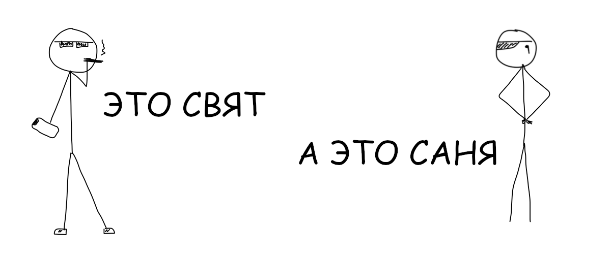

Блокчейн появился вместе с биткоином, но может использоваться независимо от него и даже
модифицироваться. Любой может сделать свой блокчейн хоть у себя на ноутбуке.
В сегодняшнем докладе мы постараемся максимально простым языком объяснить суть блокчейна. А помогут нам персонажи Свят и Саня.
